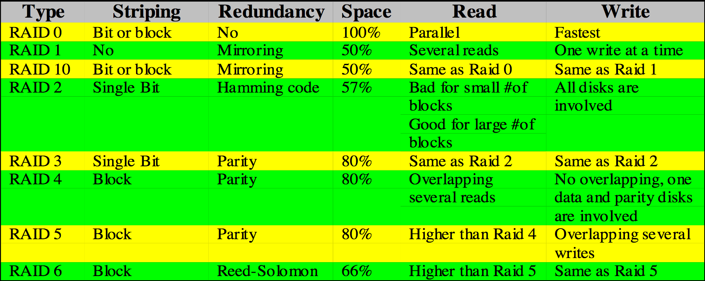

Parallel Disks (Cont.), File Systems
Database Systems - CS2300 - 1 February 2018

I/O
- Block: A unit of information communicated between disk and I/O buffer
- Access Time: Seek time + rotational time (latency) + transfer rate
Buffers are used to make I/O operations happen without hitching the CPU.
The CPU buffers all transactions to the I/O in a technique called double buffering
Files, File Systems
- A file is a collection of records of the same record type (same format and definition)
- A record is a collection of fields. It represents a collection of related data values identifying an entity. Each field then represents an attribute of an entity.
Vocab:
- File is a relation
- Record is a tuple
- Field is an attribute
- Data type is the domain of each attribute
File types
- Files can have either a fixed length record, or a variable length record